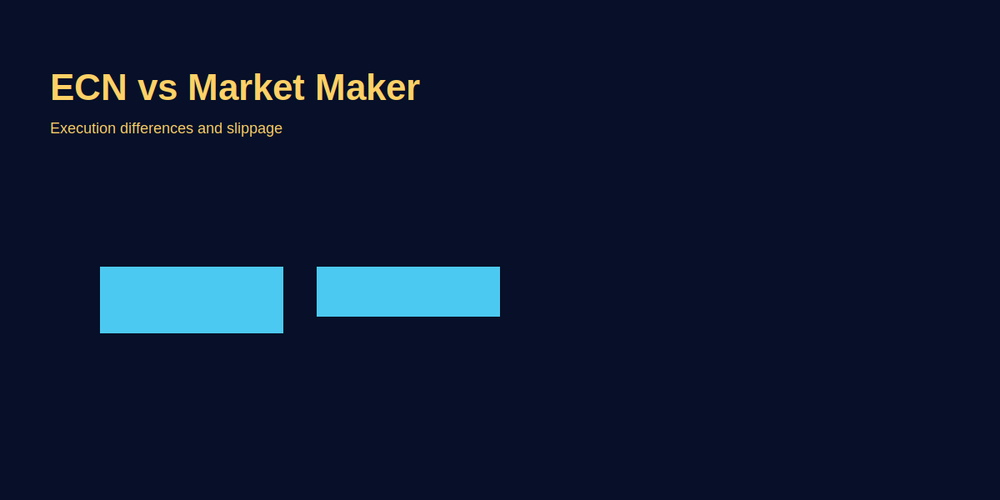

ECN vs Market Maker Brokers
Problem-based introduction
Traders confuse ECN and market maker models. Which suits you? This article explains real differences and how it affects GOLD (XAU/USD) trading in terms of spreads, slippage and commission.
ECN Broker: Direct Market Access Model
ECN = Electronic Communication Network. Orders directly liquidity providers ko pass (banks, hedge funds, other traders). Spread raw market (variable), commission transparent, conflict zero. Suitable: Scalpers, professionals wanting transparency.
Features: Variable spreads (0.5-1 pip EUR/USD London, 3-5 Asian rollover), commission $3-$7/lot transparent, no conflict of interest (broker profit fixed commission, not client loss), execution fair market-driven.
Market Maker Broker: Internal Counterparty Model
Broker internally counterparty. Fixed spreads (EUR/USD 2-3 pips typically), no commission (spread = markup), conflict of interest (broker profits client losses). Suitable: Beginners (simplicity), position traders (long holds, spread % less matter).
Features: Fixed spreads (always 2-3 pips even news), no commission, conflict high (stop hunting risk, re-quotes possible), execution simple internal-matched fast.
Cost Comparison: ECN vs Market Maker
Scalper scenario 10 trades/week GOLD: ECN: 1 pip avg spread × $10 + $50 commission = $60/week. Market Maker: 3 pips × $10 = $30/week. Market Maker cheaper here—but ECN better liquidity/slippage Tokyo-London overlap.
Swing Trader scenario 4 trades/week: ECN: $6 spread + $20 comm = $26. Market Maker: $12 spread = $12. Market Maker wins (low frequency, commission irrelevant). BUT: Execution quality ECN better (stop-hunt risk low).
Decision rule: Test both on demo (20 trades each), track ACTUAL fill quality. Average slippage + spread + commission = true cost. Best one wins.
Understanding the true cost involves more than just spreads and commissions. For ECN brokers, the variable spreads mean costs can fluctuate based on market conditions. During high-volatility events like NFP releases, spreads might widen to 2-3 pips, increasing the effective cost. Market Makers, with fixed spreads, provide predictability, which is valuable for beginners who might struggle with variable costs. However, this predictability comes at the expense of potential execution quality issues.
Another factor is the lot size. For smaller traders using micro lots (0.01), commissions on ECN might be negligible, making the raw spreads more competitive. Larger traders benefit more from ECN's transparency. Traders should calculate the break-even point where ECN becomes cheaper than Market Maker based on trade frequency.
Execution Quality: Slippage and Re-quotes
Execution quality is where ECN and Market Maker models diverge significantly. ECN brokers provide direct access to the interbank market, resulting in minimal slippage and no re-quotes. Orders are filled at the best available price from liquidity providers.
Market Maker brokers, acting as the counterparty, may introduce slippage during volatile periods or re-quote orders if the price moves against the trader. This can be frustrating for scalpers who rely on precise entries and exits.
For example, in a fast-moving market like during EUR/USD news, an ECN broker might fill an order at 1.0850 as requested, while a Market Maker might slip it to 1.0855 or re-quote. This difference can turn a profitable trade into a loss.
Traders should monitor slippage in their demo accounts and choose brokers with low slippage rates, especially for high-frequency strategies.
Regulation and Safety
Regulation plays a crucial role in broker selection. ECN brokers are often regulated by strict bodies like FCA (UK), ASIC (Australia), or CySEC (Cyprus), ensuring transparency and client fund protection.
Market Maker brokers can be regulated or offshore. Regulated ones offer similar protections, but offshore brokers might pose higher risks of fund mismanagement or sudden closures.
Always check for segregated accounts, negative balance protection, and participation in compensation schemes. For Indian traders, brokers with RBI approval or those allowing P2P transfers are preferable.
Scandals in the past have highlighted issues with some Market Maker brokers manipulating prices or withholding withdrawals. Choosing well-regulated brokers mitigates these risks.
Choosing the Right Broker for Your Style
For Scalpers: ECN brokers are ideal due to tight spreads and fast execution. Look for low commissions and high liquidity during your trading hours.
For Day Traders: A mix of both can work, but ECN provides better control over entries and exits.
For Swing/Position Traders: Market Maker brokers with fixed spreads and no commissions suit long-term holds where spread percentage is minimal.
For Beginners: Start with regulated Market Maker brokers for simplicity, then switch to ECN as you gain experience.
Consider factors like platform stability, charting tools, and customer support alongside the broker model.
Advanced Considerations
Beyond basic costs, consider hedging capabilities, margin requirements, and swap rates. ECN brokers often offer better swap rates for carry trades, while Market Makers might have more flexible leverage options.
Some brokers offer hybrid models, combining ECN execution with Market Maker spreads for certain account types. This can provide the best of both worlds but requires careful review of terms.
Technology matters too. Ensure the broker's platform supports your devices and has reliable uptime. Mobile trading apps are crucial for on-the-go traders.
Finally, community feedback on forums like Forex Factory or Reddit can provide insights into real-world experiences with specific brokers.
Image-based examples (mandatory)
Common Mistakes
- Advertised ECN spreads blindly believe: "0.5 pip spread" marketing dekha, reality 1-1.5 pip (off-hours worse). Demo test nahi kiya during target trading hours (Asian rollover 3-5 pips GOLD).
- Commission hidden cost ignore: ECN commission $7/lot think nahi, sirf raw spread focus. Total cost EUR/USD 1 lot: 0.8 pip spread + $7 = 1.8 pip equivalent. Market Maker 2 pip fixed, actually cheaper!
- Regulation check nahi: "Tight spreads" promising offshore Market Maker choose—later scam discover. ECN FCA/ASIC regulated prefer (safer).
- Stop hunting ignore: Market Maker spreads tight, but stop losses repeatedly hit (above key level exactly). ECN less risk (external market, manipulation impossible).
Pro Tips
- Demo testing real conditions: Demo account ECN pe open, same trades live broker does (day/time) = actual spreads/slippage watch. Tokyo session morning, spreads 2-3x. London session tight. Test target hours.
- Execution quality review sites: MyFXBook broker ratings, FPA reviews = real trader feedback. Slippage complaints common certain brokers (skip them).
- Broker switching trial: Comfortable broker pe 2-3 months prove, then new broker small live test (0.01 lot few trades). Execution better? Switch. Execution worse? Back previous.
- Cost tracking Journal mandatory: "Broker X 20 trades avg 2.5 pip cost, Broker Y avg 3.2 pip." Data track = best choice obvious (not feelings).
Risk Warning
Broker model influences cost and execution; pick one that matches your strategy and risk tolerance.
SEO FAQs
- 1. ECN broker kya hota hai simple terms me?
- Broker tumhara order direct interbank market ko pass karta. No conflict interest. Spreads raw (tight London, wide Asian). Commission transparent ($5-7/lot). Suitable scalpers/pros. Fair model lekin variable spreads.
- 2. Market Maker broker safer hai?
- Safer? Nahi—conflict high (broker profits from losses). Simpler? Haan (fixed spreads, fixed cost understanding). Regulation check karo (offshore bad, FCA/ASIC good). Best market makers regulated aur transparent.
- 3. ECN vs Market Maker—kaunsa sasta overall?
- Depends strategy. Scalpers: ECN usually cheaper (tight London spreads + commission
- 4. Spread commission me kitna difference?
- Spread-only (Market Maker): Cost visible in price (2-3 pips GOLD). Commission-based (ECN): 0.5 pip spread + $5 commission. Total similar but psychology different (transparent vs hidden).
- 5. Market Maker brokers risk?
- Risk: Stop-hunting (broker knows level, hunt karta), re-quotes (price change, order reject), slippage rare but possible (stop loss wild move me slip). ECN nahi yeh risks (external execution).
- 6. Kya ECN always better?
- Nahi. ECN commission + variable spreads sometimes Market Maker fixed cost more expensive total. Plus: Asian session ECN spreads worse (3-5 pips). Test your target conditions, decide data-driven.
- 7. Broker switching how often?
- Once month minimum test new broker (demo 20 trades same strategy). Execution better=switch, worse=stay. Never emotional switch. Data-driven only. Too-frequent switching itself edge harm karta.
- 8. Hybrid broker model kya?
- Small trades (0.1-0.5 lot) Market Maker, big trades (>0.5 lot) ECN. Scalpers ke liye okay nahi (can't scale). Swing traders flexible approach de sakte lekin transition point (0.5 lot) awkward hota.